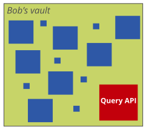

Highly decentralized environments
Personal data pods spread across the Web (Solid, Bluesky, ...)

Solid pods: document-oriented interface
Link Traversal Query Processing

Towards heterogeneous interfaces
-
Different pods can expose different types of interfaces
SPARQL endpoint, TPF, SaGe, SPF, ...
-
How to query over them without prior knowledge?
Discovery during execution
Adaptive incorporation into query plan

Goal: Implement and test prototypes
-
Querying over heterogeneous interfaces
Discovery and adaptive query planning
-
Based on extension of SolidBench
Simulated Solid environment based on social networking use case
Configurable fraction of pods can have SPARQL endpoint